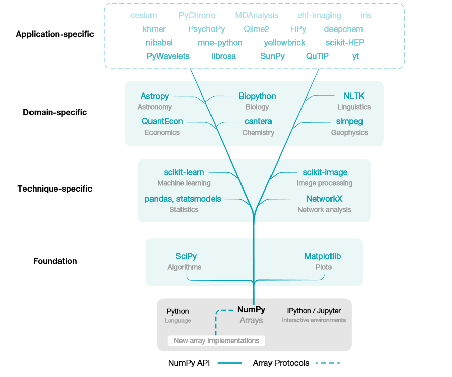
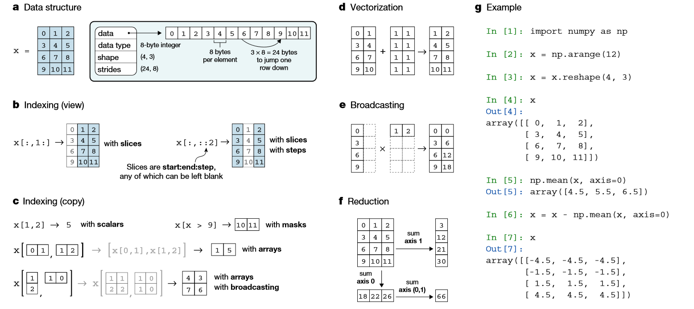

Table of Contents
1. 简介
2. 地位
NumPy 是Python数据科学生态系统的基础1
NumPy is the base of the scientific Python ecosystem.

3. 基本概念

4. 创建数组对象
4.1. N维数组
# zeros创建0矩阵 array=np.zeros((3, 4)) # ones创建1矩阵 array=np.ones((2, 3, 4), dtype=np.int16) # empty不初始化数组，值随机 array=np.empty((2, 3)) # 创建[0, n-1]的数组 np.arange(3) # 创建1-10范围类，3个数 np.arange(1, 10, 3) # 取均值步长 np.linspace(0, 1.5, 3) # array([ 0. , 0.75, 1.5 ]) ## #创建随机
4.2. one-hot
a = np.array([1, 0, 3]) b = np.zeros((a.size, a.max()+1)) b[np.arange(a.size),a] = 1 b >>> array([[ 0., 1., 0., 0.], [ 1., 0., 0., 0.], [ 0., 0., 0., 1.]])
5. 索引
np.ravel_multi_index()工作如何？
array >>> # shape (30,2) # array[1]'s unique value count is 5 dims=(30,5) # 线性index,linear indices lidx=np.ravel_multi_index(array.T,dims) >>> [15,23...,..] # shape=150
此函数为我们提供了线性索引当量数。它接受，设置为列的2D数组n-dimensional indices和该n维网格本身的形状，这些索引将映射到该n维网格上并计算等效的线性索引。
6. 数学运算
a = np.array([20, 30, 40, 50]) b = np.arrange(4) # 减法 c = b - a # 乘法 b * 2 # 新建一个矩阵 b *= 2 # 直接改变b，不会新建一个矩阵 a += 2 同理 # 次方 b ** 2 # 判断 a < 30 # array([ True, False, False, False], dtype=bool) 10 * np.sin(a) # 矩阵乘法 A = np.array([[1, 1], [0, 1]]) B = np.array([[2, 0], [3, 4]]) A.dot(B) B.dot(A) np.dot(A, B) # sum, max, min a = np.arange(12).reshape(3, 4) array([[ 0, 1, 2, 3], [ 4, 5, 6, 7], [ 8, 9, 10, 11]]) # 所有元素sum, min, max a.sum() a.max() # 使用axis=0按列, axis=1按行 a.sum(axis=0) array([12, 15, 18, 21]) a.sum(axis=1) array([ 6, 22, 38]) # 通用函数 B = np.arange(3) np.exp(B) # 求e的次方 np.sqrt(B) # 开方 C = np.array([2, -1, 4]) np.add(B, C) # 相加
7. 数组shape操作
a = np.floor(10*np.random.random((3,4))) # <1的小数*10，取整 array([[ 9., 6., 3., 8.], [ 2., 8., 4., 2.], [ 5., 3., 3., 1.]]) # 形状 a.shape (3, 4) # 打平，返回array a.ravel() array([ 9., 6., 3., 8., 2., 8., 4., 2., 5., 3., 3., 1.]) # reshape 生成新的 a.reshape(2, 6) a.reshape(3, -1) # 给定一个，自动计算另外的 # resize 改变自己 a.resize(4, 3) # 转置 a.T
res=np.where(condition, x, y) # 满足条件(condition)，输出x，不满足输出y。 res=np.where(condition) # 返回索引